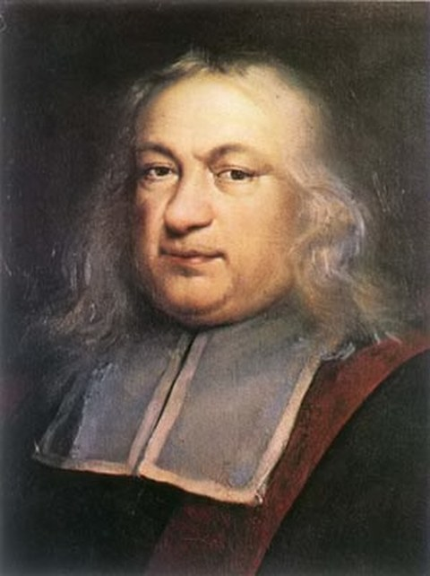
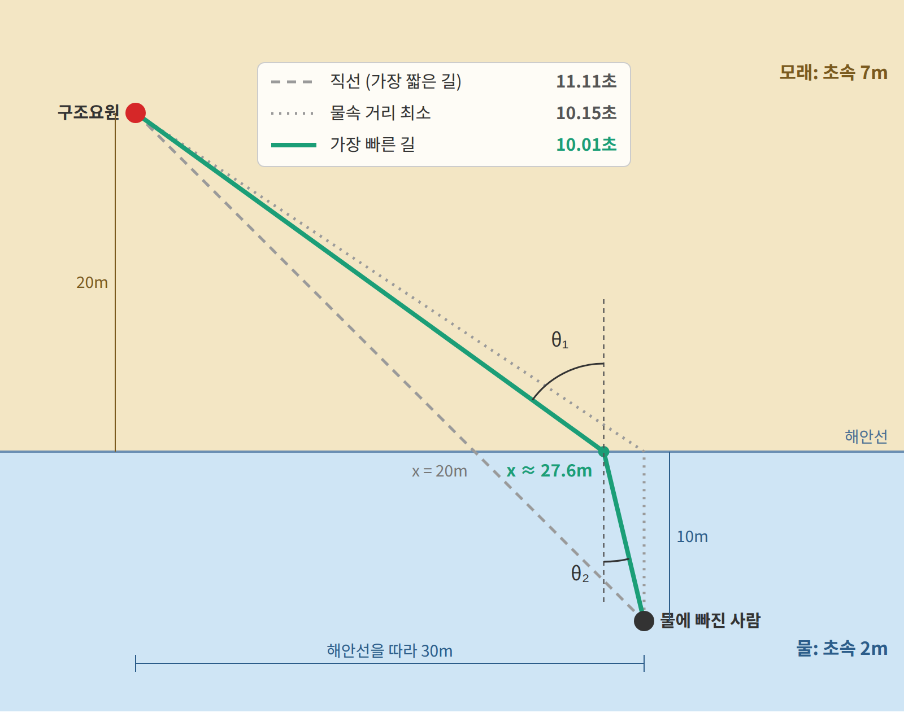
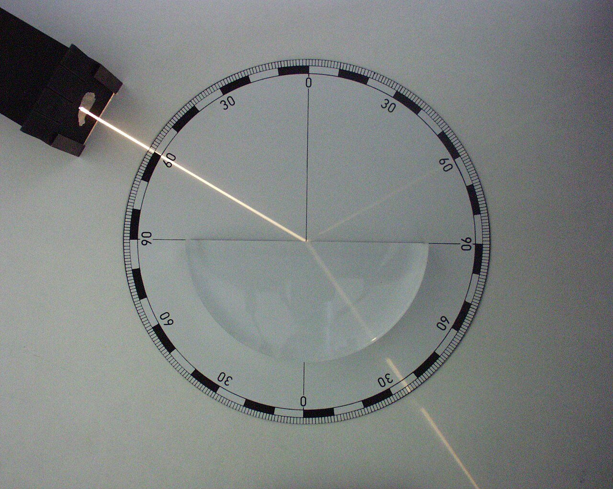

4장 — 라그랑지안과 최소 작용 원리
이 장의 물음
물체의 움직임을 설명하는 방법은 하나가 아니다. 첫째는 익숙한 방법으로, 매 순간 물체에 걸리는 힘을 구하고 그 힘으로 다음 순간의 위치를 정해 나간다. 뉴턴의 운동 법칙이 이런 방식이다.
둘째 방법은 경로 전체를 한꺼번에 본다. 위로 던진 공이 출발점에서 도착점까지 가는 경로는 여러 가지로 상상할 수 있다. 실제로 공이 그리는 포물선도 있고, 곧게 올라갔다 곧게 내려오는 경로나 중간에 잠시 멈추는 경로도 있다. 이런 경로 하나하나에 숫자 하나를 계산해 붙인다고 하자. 이 장에서는 그 숫자를 경로의 점수라고 부른다. 계산 방법은 뒤에서 정하는데(각 순간의 운동에너지에서 위치에너지를 뺀 값을 경로를 따라 더한다), 지금은 "경로를 넣으면 숫자 하나가 나오는 계산"이라는 것만 알면 된다. 매개변수를 넣으면 숫자 하나를 내놓는 ML의 손실 함수와 같은 자리에 있는 셈이다.
점수를 더 쉽게 말하면 이렇다. 내비게이션에 출발지와 목적지를 넣으면 길이 여러 개 뜨고, 길마다 "예상 소요 시간"이 하나씩 붙는다. 길 하나에 숫자 하나가 붙는 것, 이것이 점수다. 내비게이션은 그 숫자가 가장 작은 길을 추천한다.
무엇을 점수로 삼을지는 문제마다 정한다. 이 장에서 볼 세 예제의 점수는 다음과 같다.
| 예제 | 비교하는 경로들 | 점수 | 실제로 고르는 경로의 점수 |
|---|---|---|---|
| 해변 구조요원 | 물에 들어가는 지점이 다른 길들 | 도착까지 걸리는 시간 (초) | 10.01초 (가장 작음) |
| 최단강하선 | 같은 두 점을 잇는 여러 비탈면 모양 | 공이 끝까지 내려오는 시간 (초) | 1.00초 (가장 작음) |
| 진자 | 같은 시각에 같은 각도에 닿는 여러 흔들림 | 매 순간 (운동에너지 − 위치에너지)를 더한 값 (J·s) | 0.007 J·s (가장 작음) |
앞의 두 예제는 점수가 "걸리는 시간"이라서 뜻이 바로 보인다. 진자처럼 역학에서 쓰는 점수는 뜻이 덜 분명하지만, 세 예제 모두 실제로 일어나는 경로의 점수가 가장 작다는 점은 같다. 그렇다면 물체가 움직이는 것도 손실 함수를 줄여 가는 학습처럼 볼 수 있을까? 이 장은 다음 물음에 차례로 답한다.
- 경로의 점수를 가장 작게 만드는 계산에서, 매 순간의 힘으로 다음 위치를 정하는 뉴턴의 법칙이 다시 나올까?
- 경로가 숫자 몇 개가 아니라 곡선 전체일 때, 점수를 가장 작게 만드는 경로는 어떻게 찾을까?
- 실제로 일어나는 경로의 점수는 언제나 가장 작을까?
- 점수를 계산하는 규칙의 모양만 보고, 움직이는 동안 변하지 않는 양을 알아낼 수 있을까?
- 노이즈를 데이터로 옮기는 생성 모델이 곧은 경로를 쓰는 것도 이 점수로 설명할 수 있을까?
스넬의 법칙: 가장 짧은 길과 가장 빠른 길
가장 짧은 길과 가장 빠른 길은 같을까? 가는 도중에 움직이는 빠르기가 바뀌는 곳이 있으면 두 길은 달라진다. 이 장의 이야기는 바로 이 차이에서 출발한다.
역사: 헤론과 페르마
"자연은 어떤 양을 가장 작게 만드는 길을 고른다"는 생각은 빛에서 시작되었다. 1세기경 알렉산드리아의 헤론은 거울에 반사된 빛이 가장 짧은 길을 간다고 설명했다. 그런데 공기에서 물로 들어가는 빛은 경계에서 꺾이므로 가장 짧은 길로 가지 않는다. 1662년 페르마는 빛이 거리가 아니라 걸리는 시간이 가장 짧은 길을 간다고 보고, 이 생각에서 빛이 꺾이는 규칙을 이끌어 냈다. 처음에는 빛의 경로를 설명하는 데 쓰였던 이 생각은 시간이 흐르면서 역학 전체를 떠받치는 원리로 넓어진다.

페르마가 푼 문제는 빛 대신 사람을 달리게 해도 똑같이 생긴다. 손으로 풀 수 있는 작은 문제 하나로 확인해 보자.
해변 구조요원의 가장 빠른 길
구조요원이 모래사장에서 해안선으로부터 20m 떨어진 곳에 있다. 물에 빠진 사람은 해안선 따라 30m 옆, 물속으로 10m 들어간 곳에 있다. 구조요원은 모래 위에서 초속 7m, 물에서 초속 2m로 움직인다. 해안선의 어느 지점으로 물에 들어가야 가장 빨리 도착하는가?
물에 들어가는 지점을 구조요원 앞에서 해안선을 따라 x m 옆이라고 하자. 그러면 모래 위를 달리는 거리와 물속을 헤엄치는 거리가 모두 x로 정해지므로, 걸리는 시간도 x 하나의 함수로 쓸 수 있다.
이제 세 가지 전략을 비교해 보자. 가장 짧은 길인 직선으로 가는 방법, 느린 물속 거리를 가장 짧게 줄이는 방법, 그리고 t를 x로 미분한 값이 0이 되는 지점으로 들어가는 방법이다.
| 전략 | 물에 들어가는 지점 x | 걸리는 시간 |
|---|---|---|
| 직선으로 간다 (가장 짧은 길) | 20m | 11.11초 |
| 물속 거리를 최소로 (사람 바로 앞까지 뛰고 10m 헤엄) | 30m | 10.15초 |
| dt/dx = 0인 지점 | 약 27.6m | 10.01초 |
직선 경로는 거리가 가장 짧지만 느린 물속을 오래 헤엄쳐야 해서 셋 가운데 가장 늦다. 그렇다고 물속 거리를 10m까지 줄이면 이번에는 모래 위를 너무 많이 달려야 한다. 가장 빠른 길은 이 두 극단 사이에 있다. 다시 말해 물속에서 느리니 모래를 조금 더 뛰되, 물속 거리를 0에 가깝게 줄이지는 않는 것이 가장 좋다.
이 문제의 점수는 걸리는 시간 t(x)다. 길이 x 하나로 정해지므로 점수도 x 하나의 함수다. "기울기가 0"이 무슨 뜻인지 숫자로 확인해 보자. 물에 들어가는 지점을 조금 옮기고 시간이 얼마나 변하는지 재면 된다.
| 출발한 길 | 들어가는 지점을 1m 옮기면 | 0.1m 옮기면 |
|---|---|---|
| 직선 (x = 20m), 오른쪽으로 옮김 | 0.24초 빨라짐 | 0.025초 빨라짐 |
| 가장 빠른 길 (x = 27.6m), 어느 쪽으로든 | 0.024초 늦어짐 | 0.00024초 늦어짐 |
직선에서는 옮긴 거리에 비례해 시간이 줄어든다. 10분의 1만 옮기면 변화도 약 10분의 1이다. 이것이 기울기가 0이 아니라는 뜻이고, 더 좋은 쪽이 있다는 신호다. 가장 빠른 길에서는 어느 쪽으로 옮겨도 시간이 조금 늘 뿐이고, 10분의 1만 옮기면 변화는 100분의 1로 줄어든다. 옮긴 거리보다 변화가 훨씬 빨리 작아지는 것, 이것이 "기울기가 0"의 뜻이다.

그 최적의 지점에서는 한 가지 관계가 성립한다. 모래와 물에서의 진행 방향이 해안선에 수직인 선과 이루는 각을 각각 θ₁, θ₂라고 하면 다음과 같다.
실제로 계산해 보면 양쪽 모두 약 0.1157이다. 그런데 이 식은 빛이 공기에서 물로 들어갈 때 꺾이는 스넬의 굴절 법칙 (Snell’s law)과 같은 식이다. 페르마가 빛이 "걸리는 시간이 가장 짧은 길"을 간다고 보고 이끌어 낸 것이 바로 이 법칙이니, 구조요원이 푼 문제가 곧 페르마의 문제였던 셈이다.

문제 1. 구조요원은 어디로 뛰어야 하나
선생님의 수업. 김민준(학부 3학년, ML 강의 몇 개 수강)과 이서연(수학과 3학년)이 문제를 풀고, 선생님이 틀린 곳을 짚는다.
본문의 구조요원 문제(모래 20m, 옆으로 30m, 물속 10m, 모래 초속 7m, 물 초속 2m)에서 가장 빠른 길을 찾아라.

두 점 사이 가장 빠른 길은 직선이죠. 해안선 20m 지점으로 들어가요.

민준아, 물에서는 세 배 넘게 느리잖아. 물속을 최대한 짧게 해야 해. 사람 바로 앞까지 모래로 뛰고 10m만 헤엄치면 돼.

두 사람 다 계산해 보세요.

모래 √(20²+20²) ≈ 28.3m를 7로, 물 √(10²+10²) ≈ 14.1m를 2로 나누면… 11.11초요.

저는 모래 √(30²+20²) ≈ 36.1m를 7로, 물 10m를 2로 나눠서 10.15초. 제가 더 빠르네요.

둘 다 극단이에요. 들어가는 지점을 x로 두고 t(x)를 x로 미분해서 0이 되는 곳을 찾아 봐요.

x ≈ 27.6m에서 10.01초예요. 저보다 0.14초 빠르네요. 물속 거리를 0.3m 늘리는 대신 모래를 2m 줄인 거고요.

2003년에 한 수학 교사가 자기 개를 데리고 이걸 실험했어요. 호숫가에서 물에 공을 던지면 개가 어디서 물에 뛰어드는지 쟀는데, 이 계산의 최적점과 꽤 가까웠다고 해요. 논문 제목이 "개는 미적분을 아는가?"였어요.
개도 직선으로는 안 뛰는군요.
여기서 중요한 건 "가장 짧은 길"과 "가장 빠른 길"이 다르다는 거예요. 무엇을 최소화하는지 정해야 답이 정해져요.